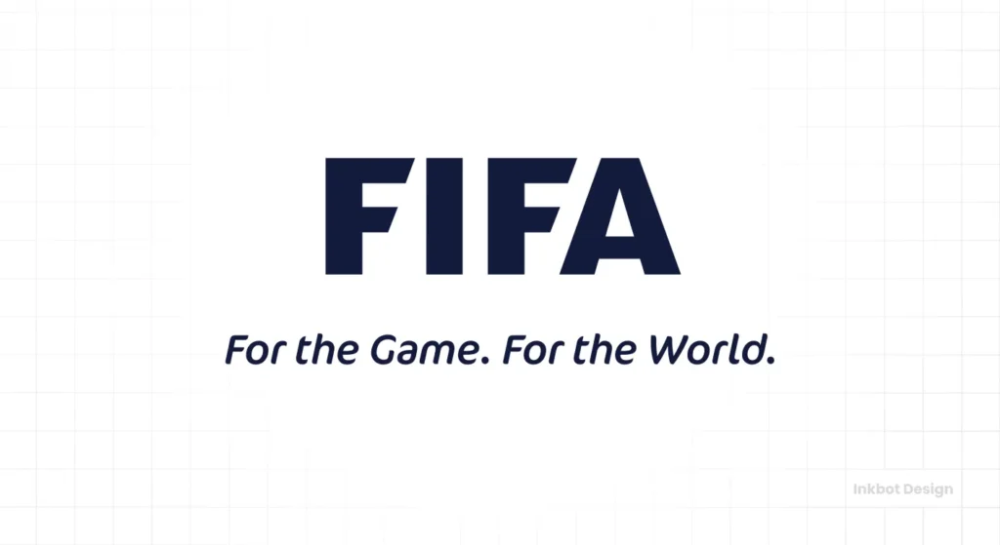

Introduction
This page provides complete information about FIFA World Cup opening matches, including results, teams, and goal scorers from 1930 to 2022.

Opening Match Results
| Year | Host | Match | Score | Goal Scorers |
|---|---|---|---|---|
| 1930 | Uruguay | France vs Mexico | 4-1 | Lucien Laurent, Marcel Langiller, André Maschinot (2), Juan Carreño |
| 1934 | Italy | Italy vs USA | 7-1 | Schiavio(3), Orsi(2), Meazza, Guarisi, Donelli |
| 1938 | France | Germany vs Switzerland | 1-1 | Josef Gauchel, André Abegglen |
| 1942 | N/A (Cancelled) | N/A | N/A | world war-II |
| 1946 | N/A (Cancelled) | N/A | N/A | world war-II |
| 1950 | Brazil | Brazil vs Mexico | 4-0 | Ademir (2), Baltazar, Jair |
| 1954 | Switzerland | Switzerland vs Italy | 2-1 | Ballaman, Hügi, Bassetti |
| 1958 | Sweden | Sweden vs Mexico | 3-0 | Nils Liedholm, Agne Simonsson, Kurt Hamrin |
| 1962 | Chile | Chile vs Switzerland | 3-1 | Leonel Sánchez (2), Jaime Ramírez, Heinz Schneiter |
| 1966 | England | England vs Uruguay | 0-0 | No goals scored |
| 1970 | Mexico | Mexico vs USSR | 0-0 | No goals scored |
| 1974 | West Germany | West Germany vs Chile | 1-0 | Paul Breitner |
| 1978 | Argentina | West Germany vs Poland | 0-0 | No goals scored |
| 1982 | Spain | Belgium vs Argentina | 1-0 | Erwin Vandenbergh |
| 1986 | Mexico | Italy vs Bulgaria | 1-1 | Alessandro Altobelli, Nasko Sirakov |
| 1990 | Italy | Argentina vs Cameroon | 0-1 | François Omam-Biyik |
| 1994 | USA | Germany vs Bolivia | 1-0 | Jürgen Klinsmann |
| 1998 | France | Brazil vs Scotland | 2-1 | César Sampaio, Bebeto, John Collins |
| 2002 | South Korea/Japan | France vs Senegal | 0-1 | Papa Bouba Diop |
| 2006 | Germany | Germany vs Costa Rica | 4-2 | Miroslav Klose (2), Lukas Podolski, Bastian Schweinsteiger, Paulo Wanchope, Christian Bolaños |
| 2010 | South Africa | South Africa vs Mexico | 1-1 | Siphiwe Tshabalala, Rafael Márquez |
| 2014 | Brazil | Brazil vs Croatia | 3-1 | Neymar (2), Oscar, Marcelo |
| 2018 | Russia | Russia vs Saudi Arabia | 5-0 | Gazinsky, Cheryshev (2), Dzyuba, Golovin |
| 2022 | Qatar | Qatar vs Ecuador | 0-2 | Enner Valencia (2) |
| 2026 | USA/Canada/Mexico | TBD | TBD | TBD(still progressing) |
Key Facts
- First World Cup goal scored in 1930 by Lucien Laurent
- France won the first ever opening match 4–1
- Russia recorded a 5–0 win in 2018 opener
- Ecuador defeated host Qatar in 2022 opener
Conclusion
FIFA World Cup opening matches show the evolution of football history, featuring exciting goals and memorable performances across decades.